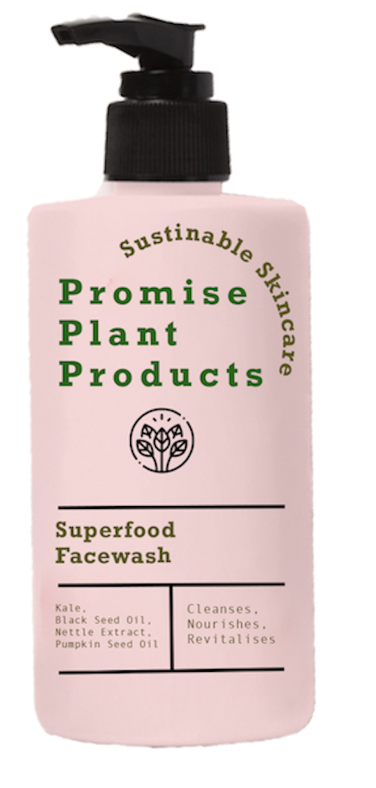

"A facewash that feels like drinking a green juice."

Superfood Facial Wash
Cleansing Wash
$69.99
SMOOTHES, RESURFACES, EXFOLIATES
Supergreens smoothie for your face? Yes please. Superfood is a purifying greens creamy smoothie-to-foam cleanser that utilizes adaptogenic ashwagandha, holy basil, reishi, turmeric and a supergreens blend of kale, spinach, neem, and spirulina
to deep clean and refresh. Powered by patented Tri-Enzyme Technology, this dual-action exfoliating facewash reveals baby-smooth skin in one wash.